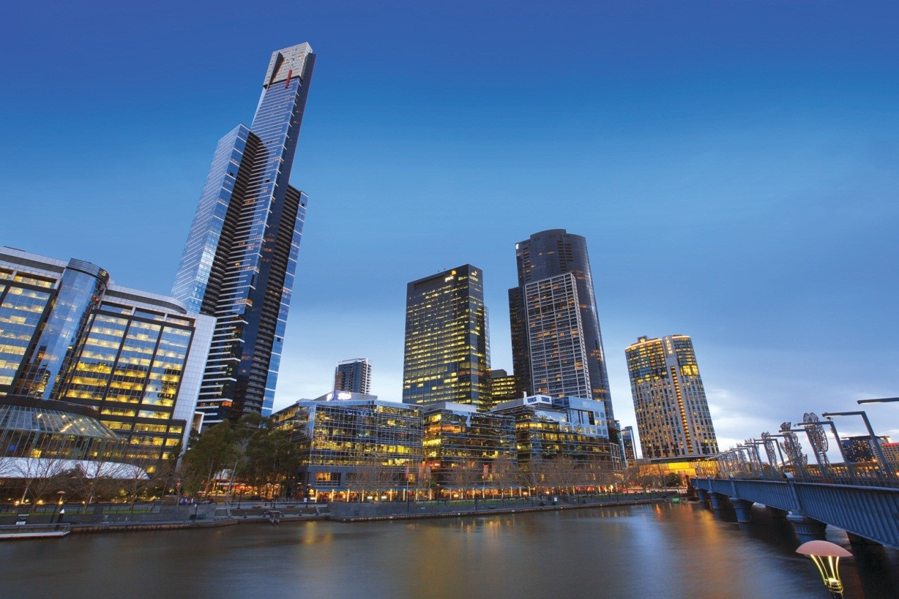
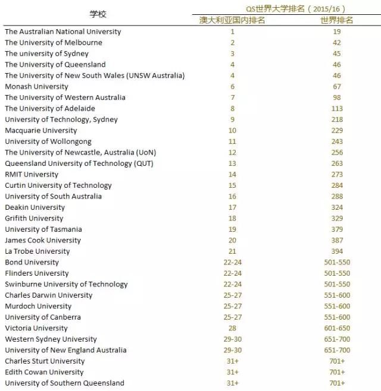

关于澳洲
为什么那么多人想移民澳大利亚呢？除了经常说的澳大利亚地理环境优越、经济制度发达以及福利政策完善之外，还有哪些更充分的理由呢？让我们看看世界各大排行榜，或许能为你找到更合适的理由。
全球人类发展指数国家：澳大利亚第二
每年，联合国都会对其成员国的状况做调查、研究，并推出年度人类发展指数（Human Development Index）。在2014年的报告中，澳洲排在187个国家的第二位，仅次于挪威。这个指数不仅对卫生、教育和收入等元素进行对比，还在这些元素中加入了“性别不公平因素”，而不是单纯地取平均值。

最适合养老国家：澳大利亚排名第三
法盛全球资产管理公司(Natixis Global Asset Management)最新公布的2015年全球退休指数(2015Global Retirement Index)显示，全球最佳养老国家中，澳洲排名第三，第一名、第二名分别为瑞士、挪威。 该指数根据世界银行、世界卫生组织等提供的数据，从医疗环境、预期寿命、金融稳定和生活质量等20个方面，比较了全球150个国家的养老情况。澳大利亚的职业养老金保障制度（Superannuation Guarantee）是该国在这一榜单上名列前茅的主要原因。另外，仅为5%的失业率、低通胀率、低水平的公共债务，以及较高的收入公平程度，也为其加分不少。
全球最幸福国家：澳大利亚排名第十
在纽约发布的联合国《2015年世界幸福报告》显示，瑞士是世界上最快乐的国家，瑞士和北欧三国冰岛、丹麦、挪威以及加拿大分居前五位，澳大利亚排名第十! 年度报告从2012年起发布，旨在帮助指导各国的公共政策、推动可持续发展。报告对全球158个国家都根据国民调查结果给出了评分，其衡量幸福的标准是：人均GDP、社会支持、健康寿命、做人生抉择的自由、宽宏大量、对腐败的看法和其他。
生活最满意国家：澳大利亚第十
根据经济合作与发展组织(简称OECD)发表的“生活满意度”指标，在加入该组织的36个成员国家中，澳大利亚排名全球第10，在社会公平方面全球排名第一。
全球宜居城市：澳大利亚四城市跻身前十！
据英国《经济学家》周刊信息部最新公布的2015年全球宜居城市排行榜，澳大利亚墨尔本、阿德莱德、悉尼、珀斯四座城市跻身前十！墨尔本已是五连冠！ 这份榜单考察了全球140个城市，根据社会稳定、医疗卫生、文化与环境、教育、基础设施等共计30个项目的评分总和进行排名，满分100分。墨尔本在医疗卫生、教育和基础设施等项目上获评高分，并以97.5分再度夺冠；阿德莱德位列第五（96.6分），悉尼第七（96.1分），西部城市珀斯排名第八（95.9分）。
世界大学排名：澳大利亚八大排名前120名
近日，英国QS机构发布《QS世界大学排名》，根据最新的排名显示，澳洲国立大学（ANU）综合排名继续蝉联澳大利亚第一的位置，在全球的排名挤进前20，墨尔本大学排名42位。此外，澳大利亚八大名校全部进入了前120的榜单。
